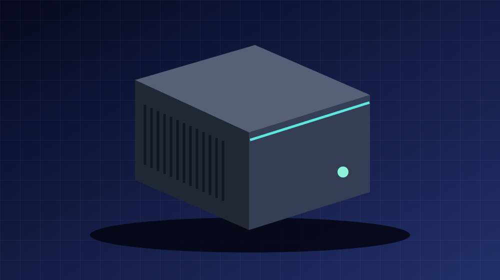
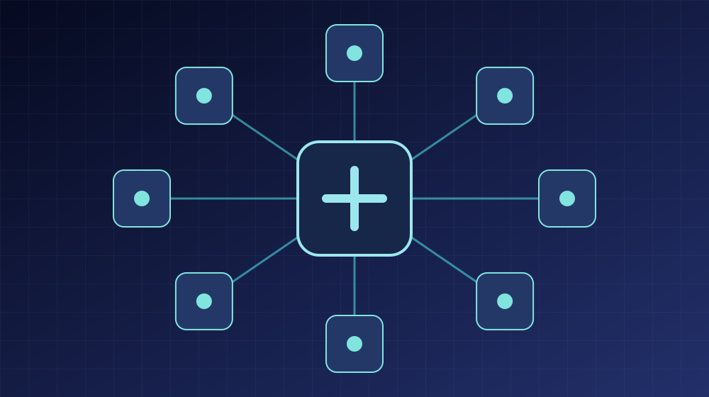
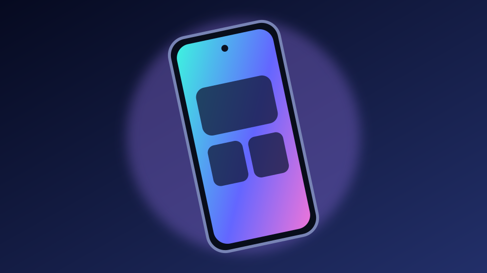

Games
GTA VI chegou: o que esperar da nova era de Vice City
O retorno a Leonida marca uma nova geração da franquia. Entenda as plataformas, o cenário e o que vale conferir antes de jogar.
O retorno a Leonida marca uma nova geração da franquia. Entenda as plataformas, o cenário e o que vale conferir antes de jogar.
Ler matéria ↗O retorno a Leonida marca uma nova geração da franquia. Entenda as plataformas, o cenário e o que vale conferir antes de jogar.

A expansão da família Gemini coloca novas opções nas mãos de desenvolvedores e usuários de inteligência artificial.
Observações de diferentes telescópios ajudam cientistas a reconstruir um evento estelar na galáxia de Andrômeda.
Celulares, SSDs e consoles entram no radar de compras. Um guia para comparar preços sem cair em falsas promoções.

O hardware da Valve aposta no SteamOS e no formato compacto. Veja o que diferencia essa proposta de um console tradicional.

A missão tripulada de 2026 ajuda a preparar as próximas etapas da exploração lunar. Entenda a diferença entre sobrevoar e pousar.

A colaboração anunciada em novembro aponta para sistemas que conectam inteligência artificial a processos corporativos.

A atualização de novembro do Google inclui novas experiências com Gemini e ferramentas para personalização.
Da Lua às descobertas que mudam nossa visão do universo.
Ver notícias ↗